|
| .: Replacing the headlight on a 156 V6 (1998) :. |
After 9 years of my car driving around one of my headlighs had misted over.
So I attempted to clean it up following the advice of people on the forum.
This works in 90% of cases, just not in mine. So I was still left with a misted light.
This guide is how to replace the head light, whether its misted or just broken.
Note: This guide was created with a 98 V6 156, the process should not differ too much on other models.
The problem: Head light need replacing.
Time: Experianced mechanic 1.5 hours, novice like me 2.5 hours.
Prep: Tools and parts.
Tools required...
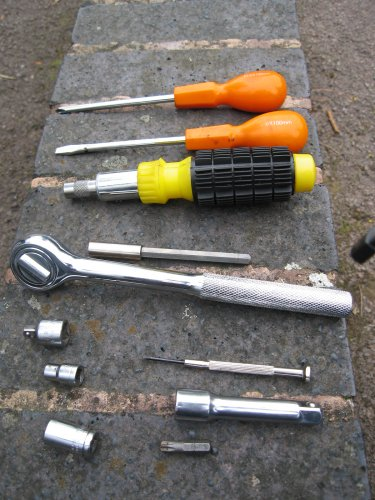
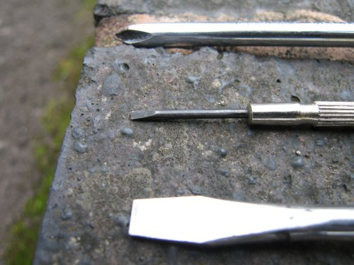
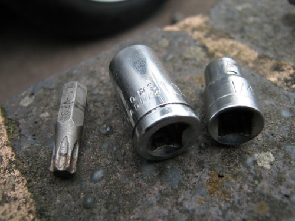
Tips:
Lefty loose, Righty tights. Just for those that have forgotten what way to undo/do up nuts.
Lets begin...
1: Jack up the car using the jack point.
I needed to jack up the car to remove the wheel arch lining to allow me to get my arm into the bumper, see later pics.
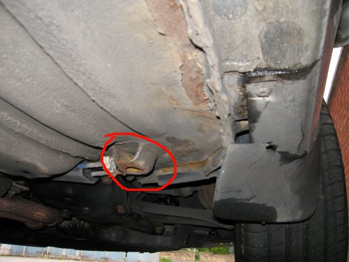
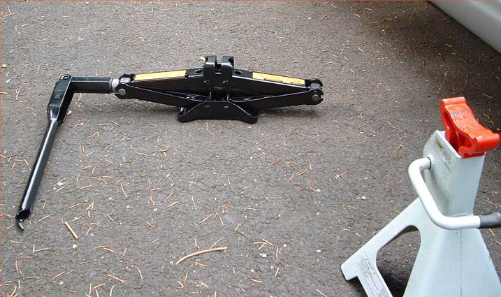
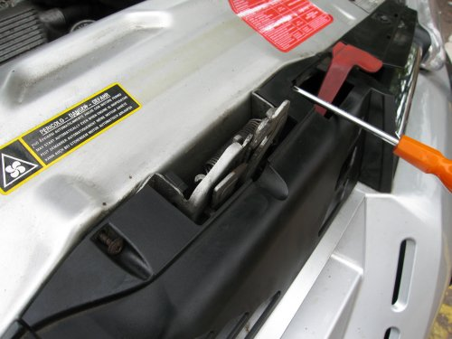
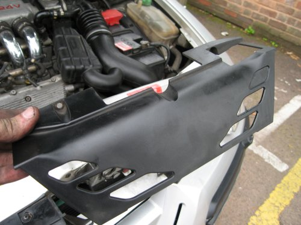
4: Then unscrew the air veins each side.
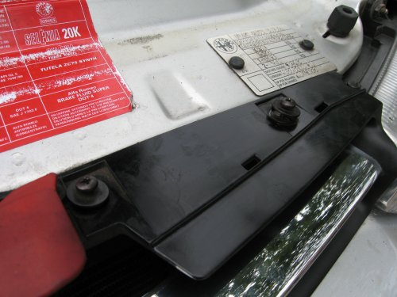
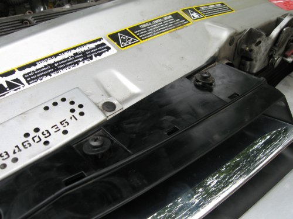
5: These then pull out, they require a bit of force though.
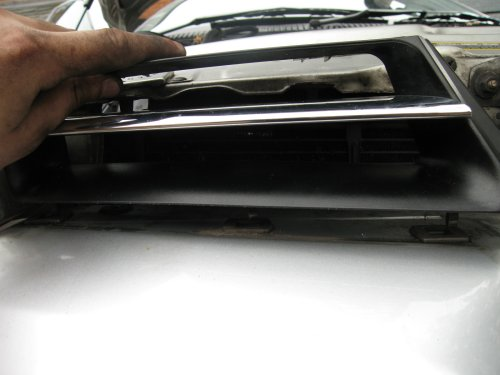
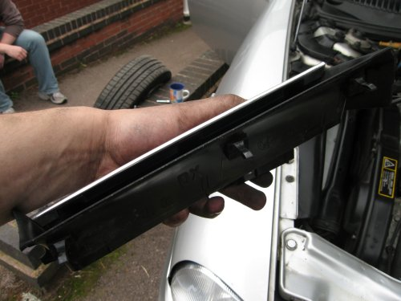
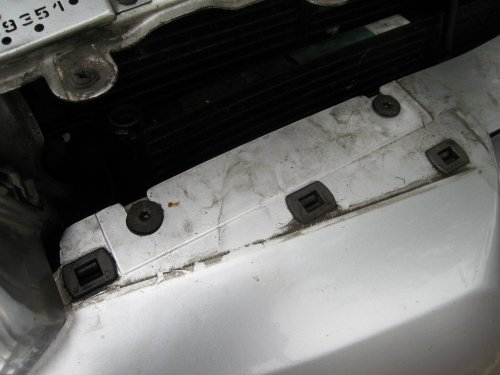
6: Next this is the type of screw that holds the bonnet on.
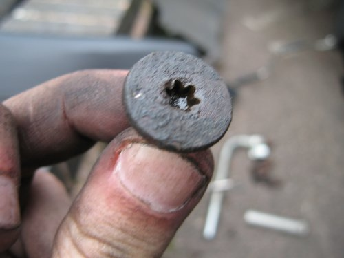
7: To remove these we are going to use both a racket and the screwdriver racket.
First lets start with 3 of the 4 screws under the front of the bumper.
I'm removing the right hand side headlight, so I'm going to leave the screws on the right still attached.
This is because I only need to lower the bumper a few inches.
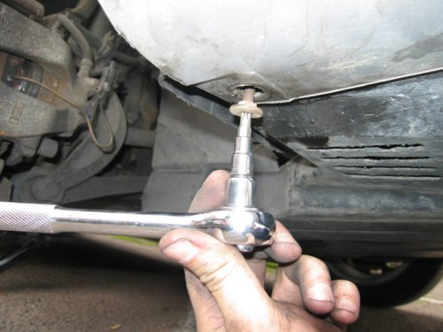
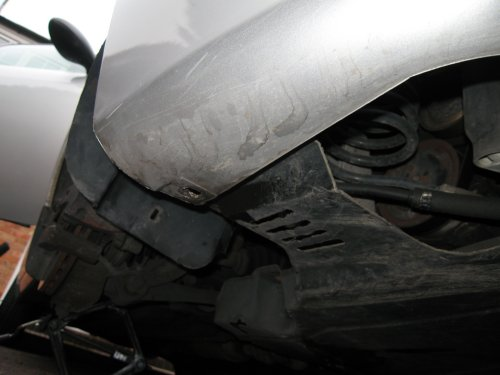
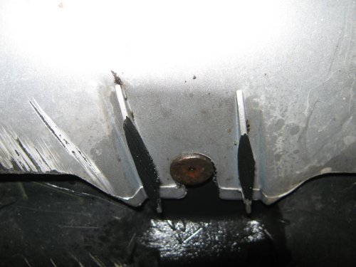
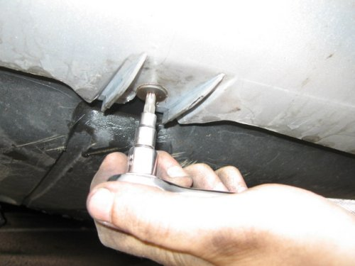
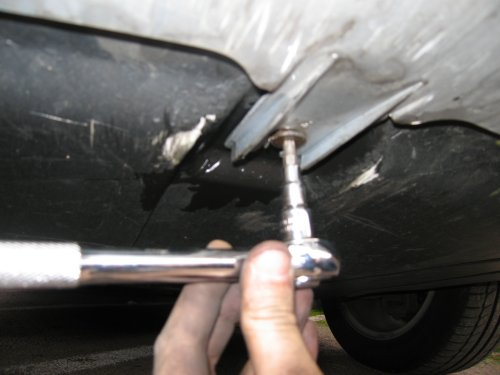
8: Next we need to remove the 2 screw in side the bumper. Yep, inside.
This isnt as bad as it sounds.
Firstly we're going to remove the wheel arch lining, this will allow us to get out arm inside the bumper and remove screws.
There are 4 screws and 1 10mm bolt holding the lining inplace.
Firstly the right side of the lining.
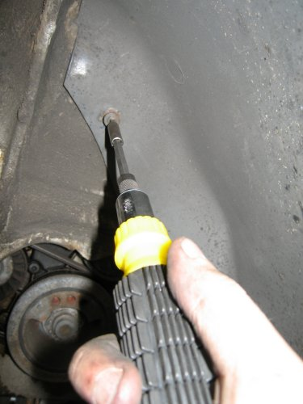
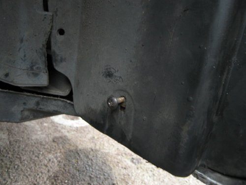
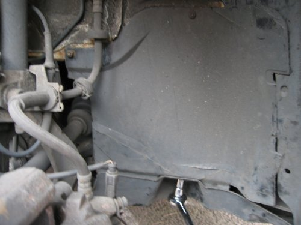
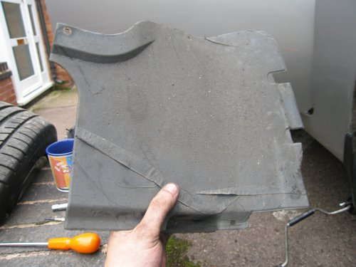
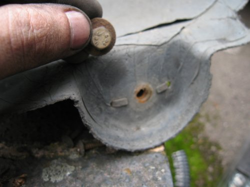
9: Next we are going to remove the 2 internal screws.
To do this we are going to user the racket screw driver and the T30 head.
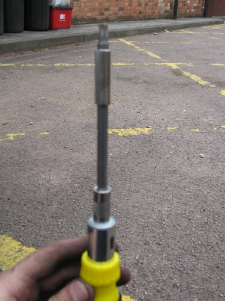
If you look up the wheel arch lining you will see the 2 screws.
In this picture the outside of the car is on the right hand side.
You can see that I've already removed 1 of these screws.
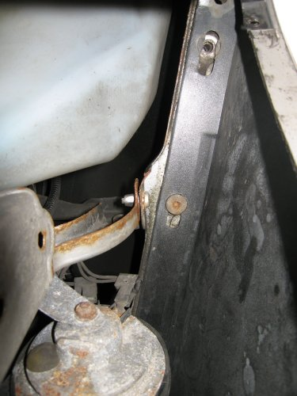
So hold back the wheel arch lining and remove the screws.
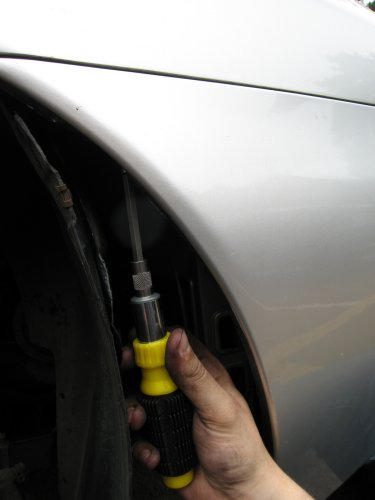
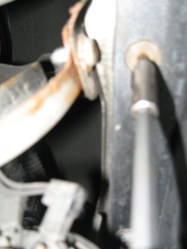
10: Once these have been undone then the last thing holding the bumper on is the 4 screws ontop + 1 popper joint.
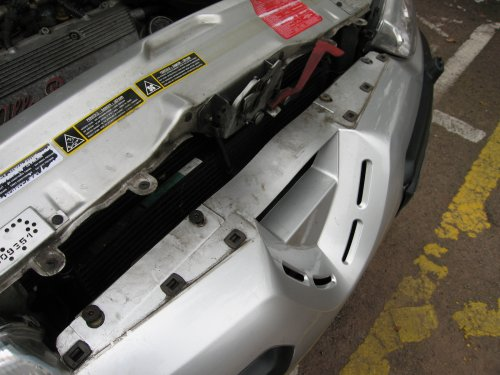
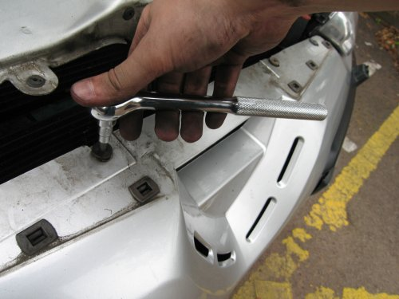
And finally the popper holding the side of the bumper on...
This is just a pull down job. Pull down on the bottom left of the bumper where you remove one of the first star screws.
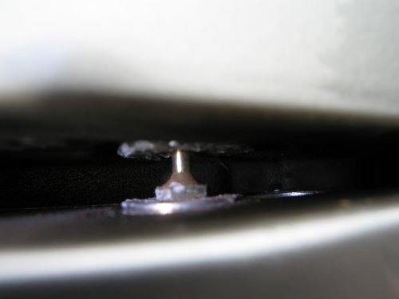
The bumper should now hang loose a little. It would be wise to support it underneath a little.
11: Now we are actually going to start removing the headlight.
To make like a little easier remove the plastic covers over the cables and water bottel.
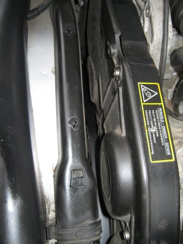
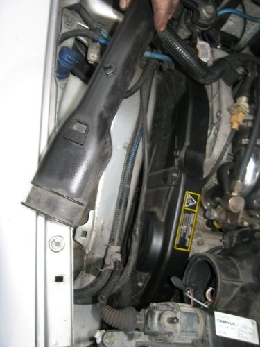
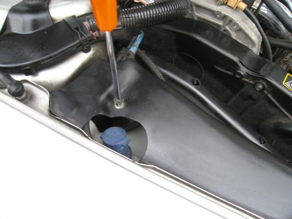
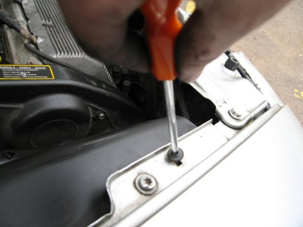
12: Now we can undo the 2 bolts that hold the head light in.
These are in the top middle and bottom left of the headlamp.
You can see the lower left 1 through the dropped bumper.
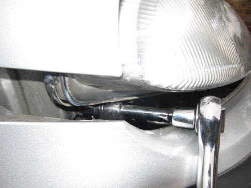
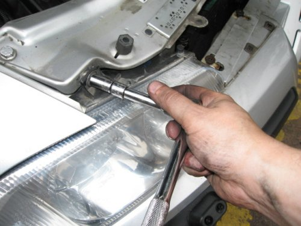
13: Now the headlight is only held on by 1 popper joint.
Much like those holding in the air vents on top of the bumper.
This popper joint is (from infront of the light) on the right hand side.
This is a picture of the back of the popper joint & then of the front.
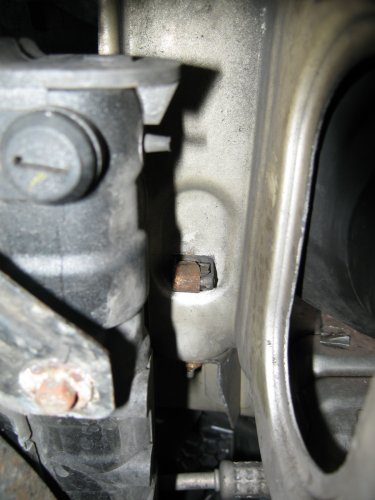
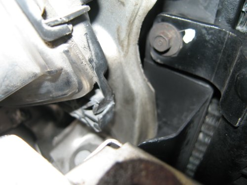
To remove the light will require a little force to get it out of this popper joint.
14: Once free, you will need to remove the cables going into the head light.
This is done with the aid of a small screwdriver to prize off the metal retaining clips.
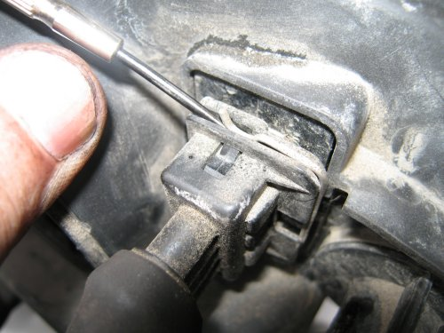
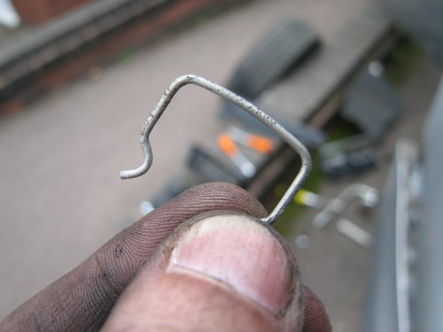
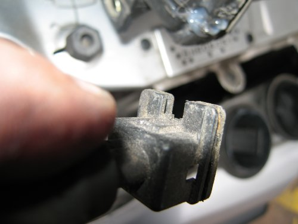
You headlamp can now be removed.
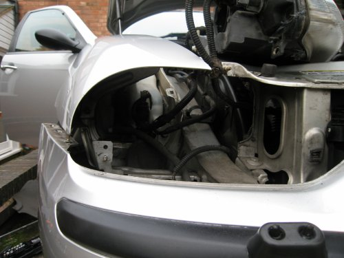
15: The next step is to test the new head light works.
So... rest the new head light on the engine, and connect up the cables again.
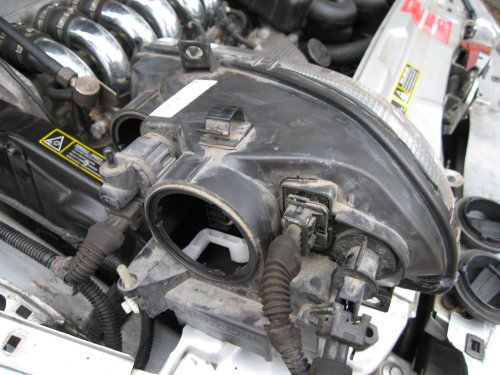
TIP: Check that the wiring in the head light is attached.
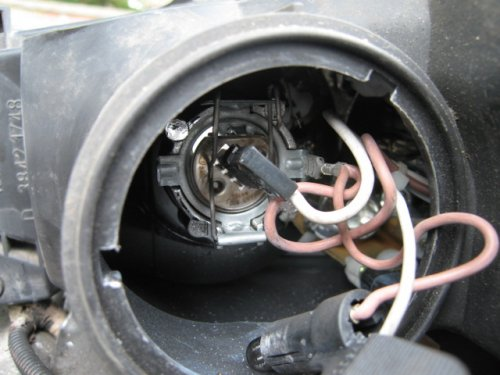
Look at the red wire connecting to the clip that attached to the main silver light frame.
If this is not connected, then this bulb will not work.
16: All should now work. If it doesn't check the bulbs are in working order.
17: Since its now all working, you can reverse the process to put the car back together.
18: This is a very important step! Go for a beer!!
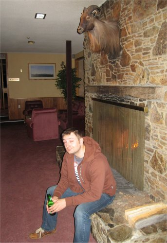
| .: Replacing the spark plugs on a 156 V6 (1998) :. |